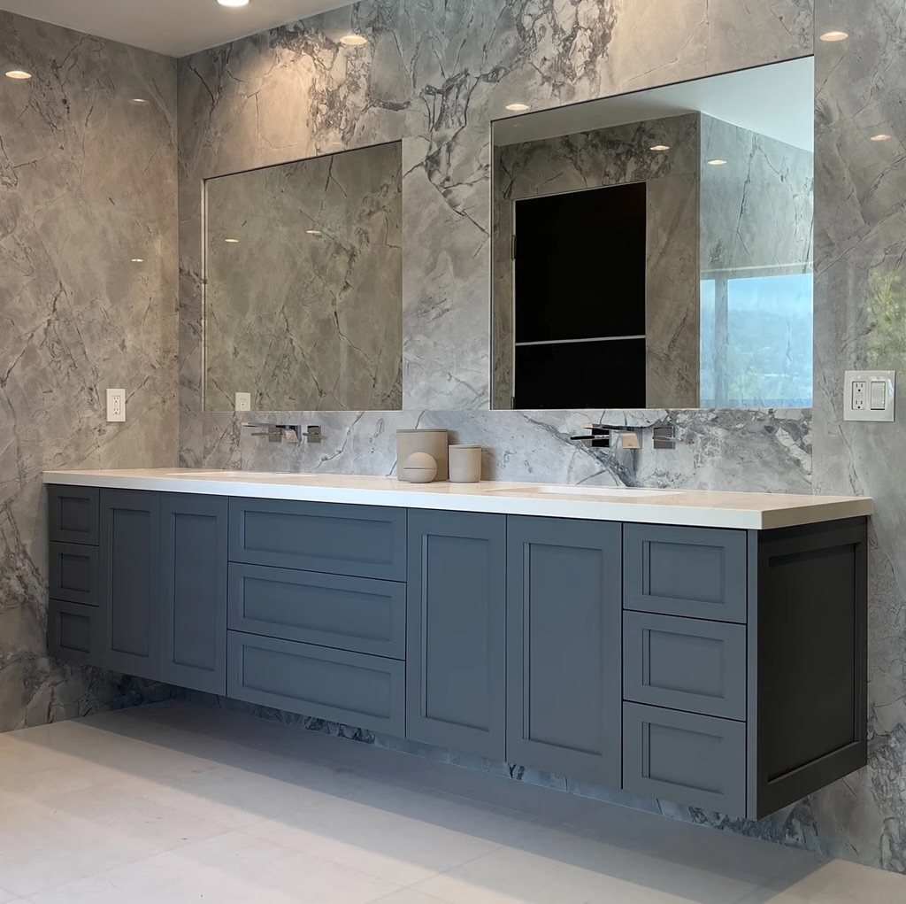

Porcelain or ceramic? Picking tile for a bathroom that lasts

Bathrooms are hard on tile: standing water, steam, cleaning products and wet feet. The right tile choice comes down to where it's going. Floors, shower walls and the wall behind the vanity all have different needs.
Porcelain vs. ceramic
Both are made from clay and fired in a kiln. Porcelain uses finer clay fired at a higher temperature, which makes it denser. Porcelain tile absorbs 0.5% of its weight in water or less, so it handles showers and floors very well. Many porcelains are "through-body", meaning the color goes all the way through and chips are hard to spot.
Ceramic is softer, lighter and easier to cut. It's a good, budget-friendly choice for bathroom walls and backsplashes, where it doesn't take foot traffic or sit in water.
- Shower floors and bathroom floors: porcelain.
- Shower walls: porcelain, or a glazed ceramic rated for wet walls.
- Walls outside the shower: either works.
Slip resistance
Look for the tile's DCOF rating (dynamic coefficient of friction). For indoor floors that will get wet, choose a tile rated at 0.42 or higher. Polished finishes look great on walls but can be slippery underfoot. Matte, textured or "grip" finishes are safer for floors.
Tile size changes the look and the grip
Large-format tiles (24 inches and up) mean fewer grout lines and a calm, modern look, which suits walls and bathroom floors. They need a very flat surface, or the edges won't sit level. On a shower floor, smaller tiles such as 2-inch mosaics follow the slope to the drain more easily, and the extra grout lines give your feet more grip.
What's behind the tile matters most
Tile and grout are not waterproof on their own. A long-lasting shower depends on a waterproofing membrane over the backer board, a properly sloped floor and sealed corners and niches. Ask any installer what waterproofing system they use. It's the step you'll never see and the one that prevents mold and leaks.
Grout
Standard cement grout needs sealing and can stain. Epoxy or high-performance grouts cost more but resist stains and don't need sealing, which is worth it in a shower. Pick a grout color close to your tile for a seamless look, or a contrast color to show off a pattern.